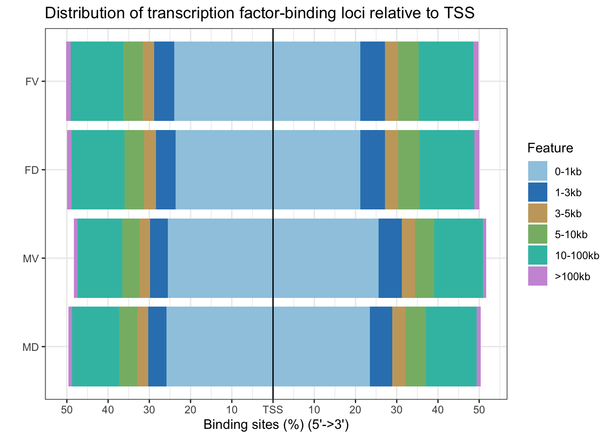

4 Peak Annotations
Based on the consensus peaks (see here)
Software used: ChIPseeker & deepTools
Below shows top 10 peaks (based on the p-values of each peak)
Annotated peaks are available to download from here
4.1 No. of peaks by group
Figure 4.1: Venn Diagram of peak overlaps (all samples)
Figure 4.2: Venn Diagram of peak overlaps (female only)
Figure 4.3: Venn Diagram of peak overlaps (male only)
4.2 No. of peaks by chromosome
| seqnames | FD | FV | MD | MV |
|---|---|---|---|---|
| 1 | 5974 | 5970 | 4927 | 4730 |
| 2 | 4029 | 4020 | 3248 | 3104 |
| 3 | 3263 | 3293 | 2584 | 2518 |
| 4 | 1876 | 1923 | 1437 | 1313 |
| 5 | 2636 | 2718 | 2064 | 1935 |
| 6 | 3115 | 3182 | 2465 | 2214 |
| 7 | 2784 | 2824 | 2252 | 2106 |
| 8 | 2070 | 2101 | 1659 | 1544 |
| 9 | 2657 | 2736 | 2263 | 2225 |
| 10 | 2514 | 2519 | 2007 | 1892 |
| 11 | 3324 | 3403 | 2798 | 2818 |
| 12 | 2695 | 2744 | 2170 | 2049 |
| 13 | 940 | 958 | 748 | 657 |
| 14 | 1996 | 2002 | 1617 | 1600 |
| 15 | 1897 | 1842 | 1594 | 1450 |
| 16 | 2373 | 2336 | 2174 | 2086 |
| 17 | 3272 | 3187 | 2762 | 2783 |
| 18 | 908 | 881 | 719 | 632 |
| 19 | 3477 | 3345 | 2987 | 2821 |
| 20 | 1766 | 1709 | 1441 | 1432 |
| 21 | 524 | 522 | 411 | 391 |
| 22 | 1643 | 1616 | 1417 | 1432 |
| X | 988 | 932 | 830 | 663 |
| Y | 0 | 0 | 1 | 0 |
4.3 No. of genes enrichred in peaks
4.3.1 Non-intergenic peaks only
Figure 4.4: Venn diagram showing the number of enriched genes
4.3.2 Peaks in TSS (<2kb)
Figure 4.5: Venn diagram showing the number of enriched genes
4.4 Genomic feature of peaks
| Feature | FD | FV | MD | MV |
|---|---|---|---|---|
| Promoter (<=1kb) | 44.85 | 45.21 | 49.29 | 51.11 |
| Promoter (1-2kb) | 6.44 | 6.41 | 5.81 | 6.02 |
| 5’ UTR | 0.27 | 0.26 | 0.32 | 0.26 |
| 3’ UTR | 1.91 | 1.94 | 2.22 | 1.98 |
| 1st Exon | 1.36 | 1.25 | 1.37 | 1.19 |
| Other Exon | 2.43 | 2.35 | 2.63 | 2.43 |
| 1st Intron | 10.99 | 11.14 | 9.84 | 9.45 |
| Other Intron | 14.41 | 14.05 | 12.33 | 11.71 |
| Downstream (<=300) | 0.73 | 0.72 | 0.79 | 0.74 |
| Distal Intergenic | 16.60 | 16.67 | 15.41 | 15.11 |
| Feature | FD | FV | MD | MV |
|---|---|---|---|---|
| Promoter (<=1kb) | 25442 | 25662 | 22955 | 22692 |
| Promoter (1-2kb) | 3652 | 3637 | 2707 | 2671 |
| 5’ UTR | 155 | 149 | 149 | 117 |
| 3’ UTR | 1085 | 1100 | 1032 | 879 |
| 1st Exon | 774 | 712 | 636 | 530 |
| Other Exon | 1377 | 1335 | 1226 | 1079 |
| 1st Intron | 6236 | 6322 | 4585 | 4196 |
| Other Intron | 8173 | 7976 | 5744 | 5197 |
| Downstream (<=300) | 413 | 407 | 366 | 327 |
| Distal Intergenic | 9414 | 9463 | 7175 | 6707 |
Figure 4.6: Genomic feautres of peaks
4.5 Distance to TSS

Figure 4.7: Distance to TSS
4.6 Peak frequency over TSS
## >> preparing promoter regions... 2021-01-04 14:44:03
## >> preparing tag matrix... 2021-01-04 14:44:04
## >> plotting figure... 2021-01-04 14:44:18## >> preparing promoter regions... 2021-01-04 14:44:18
## >> preparing tag matrix... 2021-01-04 14:44:18
## >> plotting figure... 2021-01-04 14:44:29Figure 4.8: Peak frequency over TSS (<2kb)
## >> preparing promoter regions... 2021-01-04 14:44:30
## >> preparing tag matrix... 2021-01-04 14:44:30
## >> plotting figure... 2021-01-04 14:45:01## >> preparing promoter regions... 2021-01-04 14:45:03
## >> preparing tag matrix... 2021-01-04 14:45:03
## >> plotting figure... 2021-01-04 14:45:33Figure 4.9: Peak frequency over TSS (<5kb)
4.7 Peak heatmap over TSS
Figure 4.10: Peak heatmap